Die Registerkarte Stapeln (Details Zeichnung)
PD-Dialog-Stack-Tab
Diese Registerkarte legt den Versatz der Datenzeichnungen unter Gruppierte Datenzeichnungen fest.
- 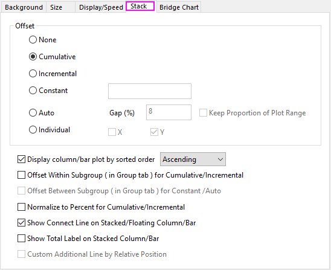
Versatz
Kein
Datenzeichnungen sind nicht gestapelt.
Kumulativ
Y-Werte der Diagramme werden kumulativ gestapelt.
- 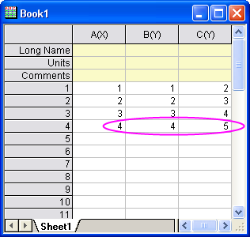 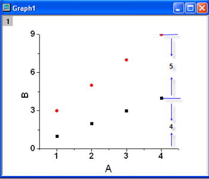
Inkrementell
2D-Balken
Zeigen Sie Y-Werte der Säulen-/Balkendiagramme in aufsteigender Reihenfolge an, so dass Säulen/Balken der größeren Y-Werte diejenigen der kleineren Werte nicht überlappen.
- 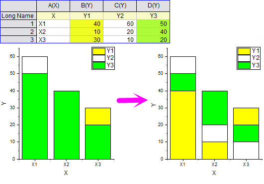
3D-Balken
Zeigen Sie Z-Werte der Säulen-/Balkendiagramme in aufsteigender Reihenfolge an, so dass Säulen/Balken der größeren Z-Werte diejenigen der kleineren Werte nicht überlappen.
- 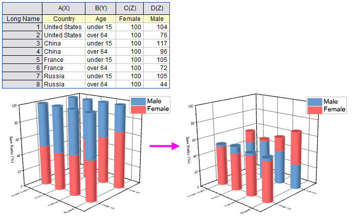
Konstante
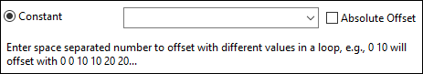
Versatz der Konstante eingeben
Eine Konstante eingeben
Versetzt Gruppendiagrammpunkte gemäß einem festgelegten konstanten Wert.
- 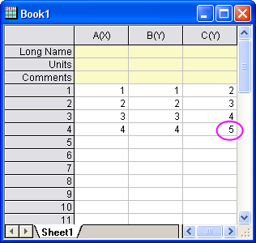 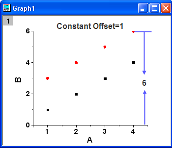
Mehrere Konstanten eingeben
Geben Sie eine Reihe von Zahlen ein, die von einem Leerzeichen getrennt werden, um einen Versatz mit verschiedenen Werten in einer Schleife zu erreichen.
Wenn Sie zwei mit Leerzeichen getrennte Konstante, 0 x,
wird die 1. Zeichnung nicht versetzt.
wird für die 2. Zeichnung eine Versatz von 0 hinzugefügt.
wird für die 3. Zeichnung eine Versatz von 0+x hinzugefügt.
wird für die 4. Zeichnung eine Versatz von 0+x+0 hinzugefügt.
wird für die 5. Zeichnung eine Versatz von 0+x+0+x hinzugefügt.
und so weiter.
0 10 bewirken beispielsweise einen Versatz von 0 0 10 10 20 20...
Eine Spaltenbeschriftungszeile wählen
Um Zeichnungen mit Werten in Spaltenbeschriftungszeilen, z. B. Kommentare, zu versetzen, verwenden Sie wcol(n)[C]. Es werden Ausdrücke wie wcol(n)[C]/2 unterstützt.
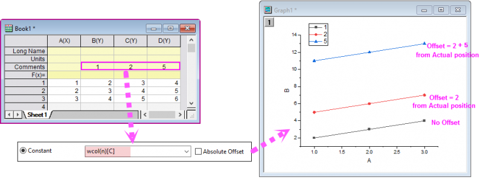
Wenn eine Beschriftungszeile zum Speichern der Versatzwerte ausgewählt wurde, behält die erste Zeichnung die ursprüngliche Position ohne Versatz. Angefangen bei der dritten gestapelten Zeichnung werden die Zeichnungen entsprechend einer Definition durch kumulative Werte versetzt :
Der Versatzwert der dritten Zeichnung ist gleich col(C)[C]+col(D)[C] = 2 + 5 = 7.
Versatz als Absoluten Versatz festlegen
Das Kontrollkästchen Absoluter Versatz hinter dem, Bearbeitungsfeld Konstante ist standardmäßig deaktiviert. Wenn es aktiviert ist, werden die Versatzwerte als absoluter Versatz von der eigentlichen Position behandelt. Die erste Zeichnung verwendet ebenfalls den Versatz.
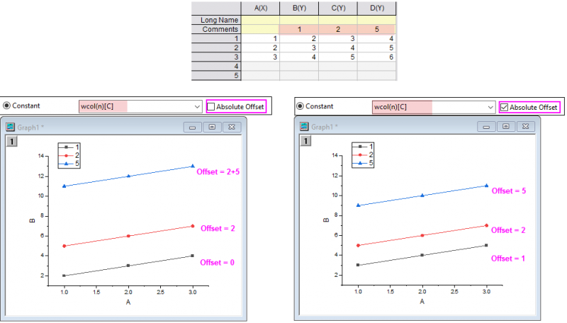
Auto
Auto berechnet konstante Versätze auf Grundlage der Minimum-Maximum-Differenz des Y-Werts und einem festgelegten Abstand. Wenn der Skalierungsbereich sich nach dem Stapeln dramatisch verändert, müssen Sie das Kontrollkästchen Anteil des Zeichnungsbereichs beibehalten aktivieren, um die gestapelten Zeichnungen korrekt anzuzeigen.
Im folgenden Beispiel kann der Abstand zwischen zwei Kurven, C1 und C2, auf denselben Graph folgendermaßen berechnet werden:
Das Maximum und Minimum der Y-Werte von C1 sind y_max1 bzw. y_min1. Das Maximum und Minimum der Y-Werte von C2 sind y_max2 bzw. y_min2. Die Differenz zwischen dem Maximum und Minimum der Y-Werte von C1 ist (y_max1-y_min1) und die von C2 ist (y_max2-y_min2). Die t-Variable ist größer als diese beiden Differenzen sein:
- t = max((y_max1-y_min1),(y_max2-y_min2)).
Der Abstand zwischen C1 und C2 beträgt:
- distance = t*gap+(y_max1-y_min1),
wobei der Wert für gap im Bearbeitungsfeld Abstand (%) angegeben wird.
Aktivieren Sie das Kontrollkästchen Anteil des Zeichnungsbereichs beibehalten, um die Anteile von (y_max1-y_min1) vs. (y_max2-y_min2) nach dem Stapeln beizubehalten. Dies ist nützlich, wenn der Achsenskalierungstyp geändert wird und sich der Zeichnungsbereich, der im Diagrammfenster angezeigt wird, dramatisch ändert, wenn die Y-Achse z.B. von Linear zu Log10 wechselt.
Individuell
Wird verwendet in Gestapelte Liniendiagramme mit Y-Versatz (Zeichnen: Mehrere Kurven: Linien mit Y-Versatz). Jede Zeichnung hat ihre eigenen individuellen Versatzeinstellungen, die auf der Registerkarte Versatz im Dialog Details Zeichnung geändert werden können, wenn die entsprechende Zeichnung im linken Bedienfeld unter dem erweiterten Symbol Layer ausgewählt ist.
Um einen Versatz zu ändern:
- Aktivieren Sie die Registerkarte Stapeln, wenn das Layersymbol im linken Bedienfeld ausgewählt ist. Wählen Sie dann die Option Individuell und aktivieren Sie X und/oder Y.
- Wählen Sie ein Liniendiagramm aus und aktivieren Sie die Registerkarte Versatz im rechten Bedienfeld. Legen Sie den Versatz für X oder Y fest.
ODER
- Klicken Sie zweimal auf die Datenzeichnung (kein Doppelklick), um sie auszuwählen, halten Sie die Maus gedrückt und ziehen Sie dann, um den Versatz zu ändern.
_Stack_Tab/Tip_icon.png) |
Das Hilfsmittel Skalierung vergrößern _Stack_Tab/Button_Zoom_In_Tool.png) kann bei Diagrammen mit Y-Versatz womöglich nicht richtig funktionieren, wenn die Fläche, die Sie versuchen zu zoomen, außerhalb des Y-Wertbereichs liegt. In solchen Fällen setzen Sie @SACS = 0. Sie sollten jede Zeichnung unabhängig vom Versatz vergrößern können. kann bei Diagrammen mit Y-Versatz womöglich nicht richtig funktionieren, wenn die Fläche, die Sie versuchen zu zoomen, außerhalb des Y-Wertbereichs liegt. In solchen Fällen setzen Sie @SACS = 0. Sie sollten jede Zeichnung unabhängig vom Versatz vergrößern können.
|
Säulen-/Balkendiagramm in sortierter Reihenfolge anzeigen
Durch Aktivierung des Kontrollkästchens Säulen-/Balkendiagramm in sortierter Reihenfolge anzeigen und Auswahl von Aufsteigend oder Absteigend wird ein gestapeltes Säulen-/Balkendiagramm vom kleinsten zum größten Wert oder umgekehrt geordnet.
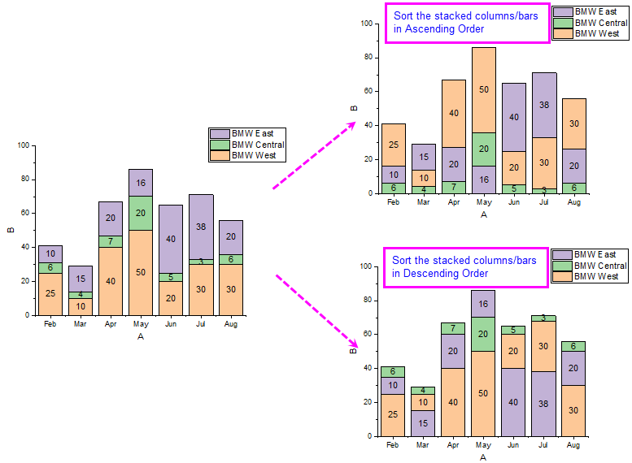
Sich überschneidende Säulen/Balken zeigen
Diese Option ist nur verfügbar, wenn Versatz auf Inkrementell gesetzt ist und für 2D-Säulen-/-Balkendiagramme verwendet werden soll. Wenn es mehrere äquivalente Y-Werte für den gleichen X-Wert gibt, aktivieren Sie das Kontrollkästchen, so dass alle diese Säulen/Balken den Raum gleichmäßig teilen, um eine Überschneidung zu vermeiden.
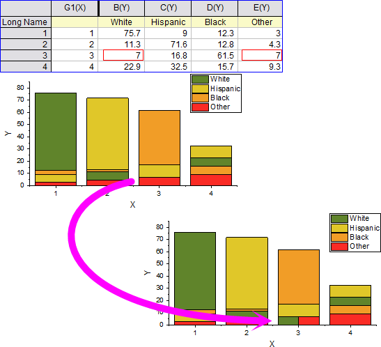
Versatz innerhalb der Untergruppierung (auf Registerkarte Gruppe) für kumulative/inkrementelle Daten verwenden
Das Kontrollkästchen Versatz innerhalb der Untergruppierung (auf Registerkarte Gruppe) für kumulative/inkrementelle Daten verwenden ist nur verfügbar, wenn der Versatz auf Kumulativ oder Inkrementell gesetzt ist. Es legt fest, ob die Untergruppierung verwendet werden soll. Wenn dieses Kontrollkästchen aktiviert ist, wird das Kontrollkästchen Verbindungslinie auf gestapelten/frei beweglichen Säulen-/Balkendiagrammen zeigen ausgegraut.
2D-Balken
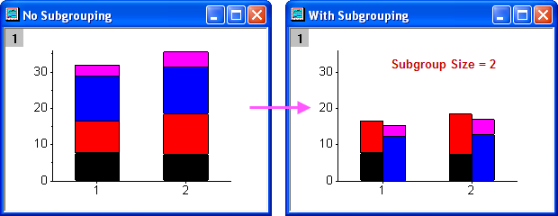
3D-Balken
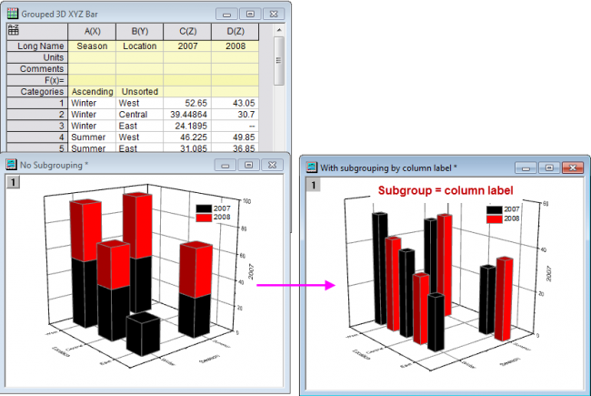
Versatz zwischen Untergruppen (auf Registerkarte Gruppe) für Konstant/Auto
Origins Diagramm Gestapelte Linien mit Y-Versatz wird verwendet, um eine gruppierte Reihe der Y-Datensätze mit Hilfe eines X- und/oder Y-Versatzes zu zeichnen und damit Abstand zwischen den Zeichnungen zu erreichen.
Verwenden Sie dieses Kontrollkästchen und die Elemente Konstant und Auto auf dieser Registerkarte zusammen mit den Bedienelementen der Untergruppierung auf der Registerkarte Gruppe, um die Linien dieses Diagrammtyp in Untergruppen aufzuteilen.
- 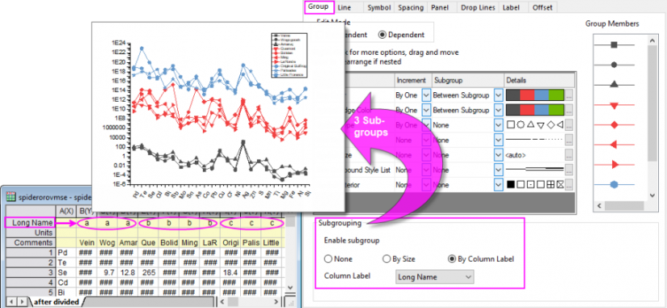
Für Kumulativ/Inkrementell auf Prozent normieren
Das Kontrollkästchen Für Kumulativ/Inkrementell auf Prozent normieren ist nur verfügbar, wenn der Versatz auf Kumulativ oder Inkrementell gesetzt ist und für 2D-Säulen-/Balkendiagramme, Flächendiagramme, Liniendiagramme, Punktdiagramme und Punkt-+ Liniendiagramme verwendet werden soll. Wenn dieses Kontrollkästchen aktiviert ist, zeigt die Y-Achse die Prozent an und jeder Stapel der Zeichnungen summiert sich zu 100 %.
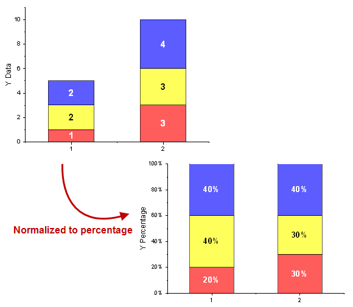
Verbindungslinie auf gestapelten und frei beweglichen Säulen-/Balkendiagrammen zeigen
Das Kontrollkästchen Verbindungslinie auf gestapelten/frei beweglichen Säulen-/Balkendiagrammen zeigen ist verfügbar, wenn
- der Versatz auf Kumulativ gesetzt und Untergruppierung (Registerkarte Gruppe) für Kumulativ verwenden nicht aktiviert ist.
oder
- bei einem frei beweglichen Säulen- oder Balkendiagramm.
Dieses Bedienelement ist für die Verwendung mit einem gestapelten Säulen-/Balkendiagramm oder einem frei beweglichen Säulen-/Balkendiagramm gedacht. Wenn dieses Kontrollkästchen aktiviert ist, werden zwischen jedem Satz der gestapelten/frei beweglichen Säulen/Balken, die mit der gleichen Y-Spalte verbunden sind, jeweils Verbindungslinien hinzugefügt. Der Stil der Verbindungslinie kann mit Hilfe der Bedienelemente auf der Registerkarte Linie benutzerdefiniert angepasst werden.
Beschriftung der Summe auf gestapelten Säulen-/Balkendiagrammen zeigen
Dieses Kontrollkästchen ist verfügbar, wenn der Versatz auf Kumulativ gesetzt ist.
Wenn dieses Kontrollkästchen aktiviert ist, wird die Beschriftung des Gesamtwerts oben/rechts von den Säulen/Balken gezeigt. Sein Anzeigeformat entspricht dem der Datenbeschriftung, die auf der Registerkarte Beschriftung benutzerdefiniert angepasst wird mit Ausnahme der Beschriftungsposition und Schriftfarbe.
- 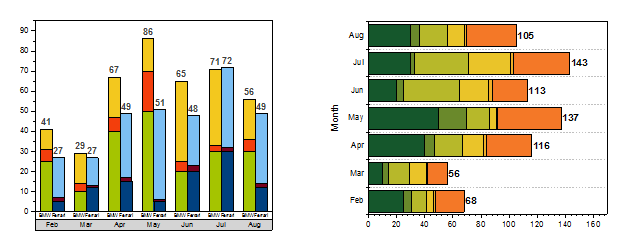
Benutzerdefinierte zusätzliche Linie nach relativer Position
Dieses Kontrollkästchen sollte standardmäßig deaktiviert sein. Es ist nur verfügbar, wenn Versatz auf Konstant/Auto/Individuell gesetzt ist.
Diese Funktion funktioniert nur, wenn (1) es eine zusätzliche Linie (Y=) gibt; (2) Offset auf Konstant/Auto/Individuell gesetzt wurde; (3) das Kontrollkästchen Füllfläche unter Kurve auf der Registerkarte Linie aktiviert oder Führen zu auf der Registerkarte Ankerlinien auf Benutzerdefinierte zusätzliche Linie gesetzt wurde.
Das bedeutet, dass, wenn dieses Kontrollkästchen aktiviert wurde, jedes Stapeldiagramm über eine relative zusätzliche Linie verfügt. Die vertikale Distanz von der Zeichnung zu seiner relativen zusätzlichen Linie sollte die gleiche sein, da der Versatz des Stapeln auf Kein gesetzt wurde. Jede Zeichnung hat eine Füllung oder Ankerlinie zu der relativen zusätzlichen Linie.
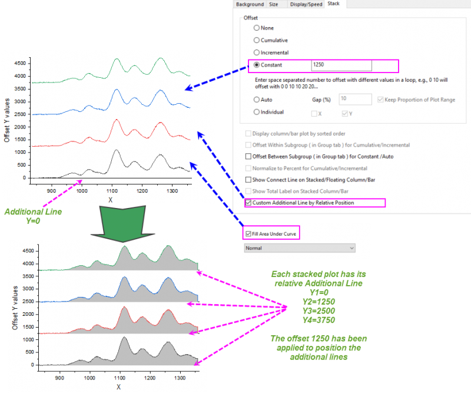